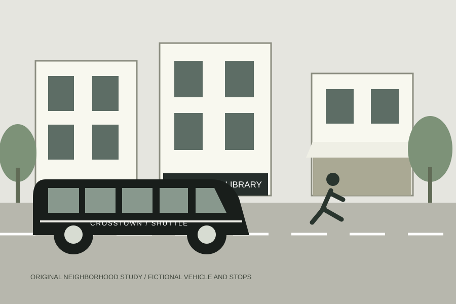

慢慢走，看看街角
比较固定步行情境。沿街角与河岸前行，不请求你的位置。
把熟悉的地方，连起来。
本页固定情境 / 不是实际班次或导航
尚未选定路线
原创示意地图 · 不提供真实导航 / 班次A FEW WAYS TO GO
比较固定步行情境。沿街角与河岸前行，不请求你的位置。
查看演示停靠点之间的路线。没有真实发车时间，也不会发起叫车。
勾选无障碍偏好，会切换为另一路径与零台阶情境。不构成现实可达性承诺。

FAMILIAR STREETS. NEW POSSIBILITIES.
图书馆、集市和活动站，把日常连成一张小小的网。Crosstown 用一个虚构街区，演示不同出行选择如何被清楚地放在一起。
比较一段路线 ↑原创社区服务界面练习。地点、车辆、时长与服务能力均为固定示例，没有定位、扣款或真实订单。
试试路线规划 ↑